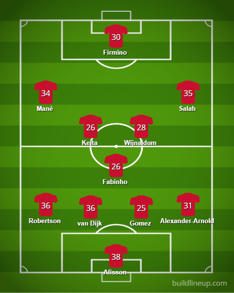
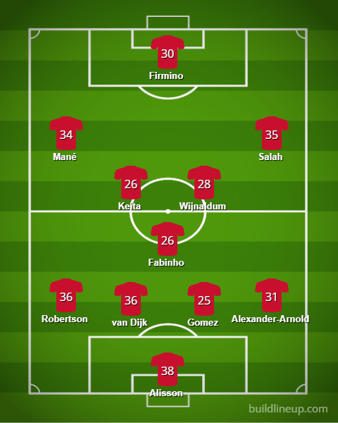

Key Contributors:
Mohammed Salah: this 5’9” egyptian winger was 27 years old during the 2019-2020 season. He had one of the best seasons an attacker in the premier league has ever had. He finished top 5 in goals for the season with 19 league goals and top 5 in assists for the season with 10 league assists. He was one of the direct reasons that liverpool was able to finish at the top of the EPL table
Sadio Mane: this 5’9” winger from Senegal was 27 years old during the 2019-2020 season. He was often looked at as Mohammed Salah’s ‘partner in crime’ as they would sprint up and down the flanks of the field. He was 6th in the league in scoring with 18 goals and eleventh in the league in assists with a total of 7. He was the perfect compliment to Salah with impressive pace and scoring ability.
Virgil van Dijk: this 6’4” center back from the Netherlands was 28 years old during the 2019-2020 season. Van Dijk held a never before seen 100% tackle rate which meant that not a single player in the league got past him while dribbling. This is an unheard of accolade from a defender who had one of the best seasons to date.
Fabinho: this 6’2” Brazilian central midfielder was 26 years old during the 2019-2020 season. Though he did not wear the captain band, he was looked at as the head of the team, controlling the tempo of play and doing the ‘dirty work’ in the midfield like the 50/50 balls and finding outlet passes to the attackers. His stamina and seeming ability to always keep running is a big reason why Liverpool was able to dominate most of their games.
Liverpool won the EPL last year during the 2019-2020 season. This was the first ever time that liverpool has ever won the premier league. The club and its supporters have fallen short many times before with super teams that rostered legendary midfielder Steven Gerard and clinical striker Luis Suarez. Their German manager, Jurgen Klopp, who played for Liverpool about two decades ago, led the club to a total of 99 EPL points and a record of 32 wins, 3 draws, and 3 losses. Klopp’s gameplan often changed based on the team and formation they were playing against. However, the german manager often employs a high pressure style of play that relies on pressuring the opponents defenders and not letting them possess and move the ball forward. This style of play requires pacey players with a lot of stamina and spacial awareness that make sure not to leave them exposed defensively when the attackers are pressing the opponents backline.
The video above gives a good understanding Liverpool’s style of play.